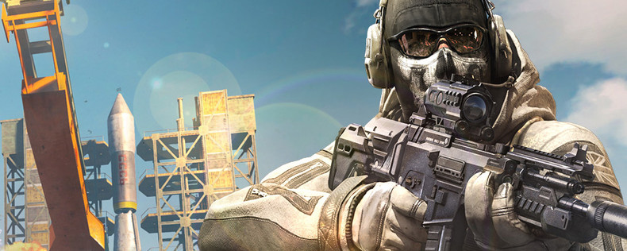
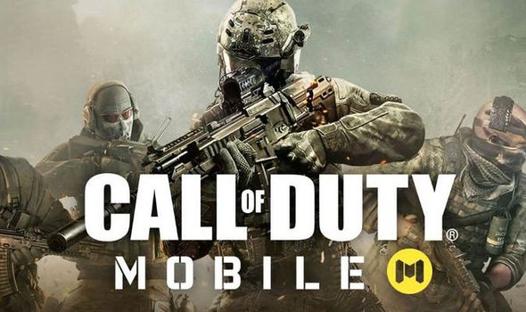

Во что поиграть в октябре: эти лучшие мобильные игры месяца
Шли ведьмак и миньон по футбольному полю, услышали зов долга, сели в танк и сгорели
Потому что шикарных игр в середине осени выходит так много, что ваше устройство под угрозой! Вы либо «протапаете» дыру в экране, либо он просто взорвется от того напряжения и экшена, что ждет вас в каждой из перечисленных ниже игр.
Фраза актрисы Александры Бортич, благодаря BadComedian ставшая почти мемом, очень подходит для описания этого релиза. «Камон, ребят, Call of Duty!», — говорим вам мы и показываем в сторону App Store и Google Play, где шутер уже доступен. Причем скачать игру может кто угодно, ведь она бесплатная! Да, с различными лутбоксами, но ведь Activision нужно в первую очередь деньги зарабатывать.
Call of Duty: Mobile объединяет в себе различных элементы «больших» игр серии, выходивших на ПК и консолях. Знатоки франшизы узнают локации (такие какие Nuketown), персонажей (капитан Прайс, Мэйсон) и многое другое. Разработчики предлагают множество интересных режимов, включая Королевскую битву.
